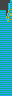
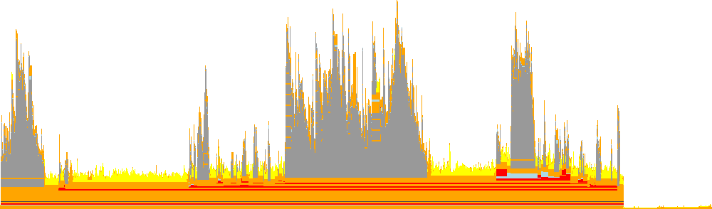

FlameGraphs.jl
FlameGraphs is a package that adds functionality to Julia's Profile standard library. It is directed at the algorithmic side of producing flame graphs, but includes some "format agnostic" rendering code. FlameGraphs is used by IDEs like Juno and visualization packages like ProfileView, ProfileVega, and ProfileSVG.
Computing a flame graph
The core function of FlameGraphs is to compute a tree representation of a set of backtraces collected by Julia's sampling profiler. For a demonstration we'll use the following function:
julia> function profile_test(n) for i = 1:n A = randn(100,100,20) m = maximum(A) Am = mapslices(sum, A; dims=2) B = A[:,:,5] Bsort = mapslices(sort, B; dims=1) b = rand(100) C = B.*b end endprofile_test (generic function with 1 method)julia> profile_test(1) # run once to compilejulia> using Profile, FlameGraphsjulia> Profile.clear(); @profile profile_test(10) # collect profiling datajulia> g = flamegraph()Node(FlameGraphs.NodeData(ip:0x0, 0x00, 1:18))
This may not be very informative on its own; the only thing it communicates clearly is the number of samples (separate backtraces) collected during profiling, given by the range in the printed NodeData. (If you run this example yourself, you might get a different number of samples depending on how fast your machine is and which operating system you use.) It becomes more meaningful with
julia> using AbstractTreesjulia> print_tree(g)NodeData(ip:0x0, 0x00, 1:18) └─ NodeData(_start() at client.jl:550, 0x00, 1:17) └─ NodeData(exec_options(opts::JLOptions) at client.jl:283, 0x00, 1:17) └─ NodeData(eval(m::Module, e::Any) at boot.jl:489, 0x00, 1:17) └─ NodeData((::IncludeInto)(fname::String) at Base.jl:308, 0x00, 1:17) └─ NodeData(include(mapexpr::Function, mod::Module, _path::String) at Base.jl:307, 0x00, 1:17) ⋮
Each node of the tree consists of a StackFrame indicating the file, function, and line number of a particular entry in one or more backtraces, a status flag, and a range that corresponds to the horizontal span of a particular node when the graph is rendered. See FlameGraphs.NodeData for more information. (For developers, g is a left-child, right-sibling tree.)
flamegraph has several options that can be used to control how it computes the graph.
Allocation profiles
FlameGraphs can also represent data collected by Julia's allocation profiler (Profile.Allocs). Collect the data and pass the result of Profile.Allocs.fetch() to flamegraph:
using Profile, FlameGraphs
Profile.Allocs.@profile profile_test(10)
g = flamegraph(Profile.Allocs.fetch())For an allocation flame graph, the width of each node measures memory allocation rather than run time: by default the number of bytes allocated, or the number of separate allocations with mode=:count. The leaf of each branch names the type of the allocated object. The resulting g is an ordinary flame graph and can be rendered exactly like a time profile.
Rendering a flame graph
You can create a "bitmap" representation of the flame graph with flamepixels:
julia> img = flamepixels(g)
125×20 Array{RGB{N0f8},2} with eltype ColorTypes.RGB{FixedPointNumbers.Normed{UInt8,8}}:
RGB{N0f8}(1.0,0.0,0.0) RGB{N0f8}(1.0,1.0,1.0) … RGB{N0f8}(1.0,1.0,1.0) RGB{N0f8}(1.0,1.0,1.0) RGB{N0f8}(1.0,1.0,1.0)
RGB{N0f8}(1.0,0.0,0.0) RGB{N0f8}(0.62,0.62,0.62) RGB{N0f8}(1.0,1.0,1.0) RGB{N0f8}(1.0,1.0,1.0) RGB{N0f8}(1.0,1.0,1.0)
RGB{N0f8}(1.0,0.0,0.0) RGB{N0f8}(0.62,0.62,0.62) RGB{N0f8}(1.0,1.0,1.0) RGB{N0f8}(1.0,1.0,1.0) RGB{N0f8}(1.0,1.0,1.0)
RGB{N0f8}(1.0,0.0,0.0) RGB{N0f8}(0.62,0.62,0.62) RGB{N0f8}(1.0,1.0,1.0) RGB{N0f8}(1.0,1.0,1.0) RGB{N0f8}(1.0,1.0,1.0)
RGB{N0f8}(1.0,0.0,0.0) RGB{N0f8}(0.62,0.62,0.62) RGB{N0f8}(1.0,1.0,1.0) RGB{N0f8}(1.0,1.0,1.0) RGB{N0f8}(1.0,1.0,1.0)
RGB{N0f8}(1.0,0.0,0.0) RGB{N0f8}(0.62,0.62,0.62) … RGB{N0f8}(1.0,1.0,1.0) RGB{N0f8}(1.0,1.0,1.0) RGB{N0f8}(1.0,1.0,1.0)
RGB{N0f8}(1.0,0.0,0.0) RGB{N0f8}(0.62,0.62,0.62) RGB{N0f8}(1.0,1.0,1.0) RGB{N0f8}(1.0,1.0,1.0) RGB{N0f8}(1.0,1.0,1.0)
RGB{N0f8}(1.0,0.0,0.0) RGB{N0f8}(0.62,0.62,0.62) RGB{N0f8}(1.0,1.0,1.0) RGB{N0f8}(1.0,1.0,1.0) RGB{N0f8}(1.0,1.0,1.0)
RGB{N0f8}(1.0,0.0,0.0) RGB{N0f8}(0.62,0.62,0.62) RGB{N0f8}(1.0,1.0,1.0) RGB{N0f8}(1.0,1.0,1.0) RGB{N0f8}(1.0,1.0,1.0)
RGB{N0f8}(1.0,0.0,0.0) RGB{N0f8}(0.62,0.62,0.62) RGB{N0f8}(1.0,1.0,1.0) RGB{N0f8}(1.0,1.0,1.0) RGB{N0f8}(1.0,1.0,1.0)
⋮ ⋱
RGB{N0f8}(1.0,0.0,0.0) RGB{N0f8}(0.62,0.62,0.62) … RGB{N0f8}(1.0,1.0,1.0) RGB{N0f8}(1.0,1.0,1.0) RGB{N0f8}(1.0,1.0,1.0)
RGB{N0f8}(1.0,0.0,0.0) RGB{N0f8}(1.0,1.0,1.0) RGB{N0f8}(1.0,1.0,1.0) RGB{N0f8}(1.0,1.0,1.0) RGB{N0f8}(1.0,1.0,1.0)
RGB{N0f8}(1.0,0.0,0.0) RGB{N0f8}(1.0,1.0,1.0) RGB{N0f8}(1.0,1.0,1.0) RGB{N0f8}(1.0,1.0,1.0) RGB{N0f8}(1.0,1.0,1.0)
RGB{N0f8}(1.0,0.0,0.0) RGB{N0f8}(1.0,1.0,1.0) RGB{N0f8}(1.0,1.0,1.0) RGB{N0f8}(1.0,1.0,1.0) RGB{N0f8}(1.0,1.0,1.0)
RGB{N0f8}(1.0,0.0,0.0) RGB{N0f8}(1.0,1.0,1.0) RGB{N0f8}(1.0,1.0,1.0) RGB{N0f8}(1.0,1.0,1.0) RGB{N0f8}(1.0,1.0,1.0)
RGB{N0f8}(1.0,0.0,0.0) RGB{N0f8}(0.659,0.635,0.0) … RGB{N0f8}(1.0,1.0,1.0) RGB{N0f8}(1.0,1.0,1.0) RGB{N0f8}(1.0,1.0,1.0)
RGB{N0f8}(1.0,0.0,0.0) RGB{N0f8}(1.0,1.0,1.0) RGB{N0f8}(1.0,1.0,1.0) RGB{N0f8}(1.0,1.0,1.0) RGB{N0f8}(1.0,1.0,1.0)
RGB{N0f8}(1.0,0.0,0.0) RGB{N0f8}(1.0,1.0,1.0) RGB{N0f8}(1.0,1.0,1.0) RGB{N0f8}(1.0,1.0,1.0) RGB{N0f8}(1.0,1.0,1.0)
RGB{N0f8}(1.0,0.0,0.0) RGB{N0f8}(0.804,0.725,1.0) RGB{N0f8}(1.0,1.0,1.0) RGB{N0f8}(1.0,1.0,1.0) RGB{N0f8}(1.0,1.0,1.0)
RGB{N0f8}(1.0,0.0,0.0) RGB{N0f8}(0.804,0.725,1.0) RGB{N0f8}(1.0,1.0,1.0) RGB{N0f8}(1.0,1.0,1.0) RGB{N0f8}(1.0,1.0,1.0)You can display this in an image viewer, but for interactive exploration ProfileView.jl adds additional features.
The coloration scheme can be customized as described in the documentation for flamepixels, with the default coloration provided by FlameColors. This default uses cycling colors to distinguish different stack frames, while coloring runtime dispatch red and garbage-collection orange. If we profile "time to first plot,"
using Plots, Profile, FlameGraphs
@profile plot(rand(5)) # "time to first plot"
g = flamegraph(C=true)julia> img = flamepixels(g);we might get something like this:
The following is an example of a customized coloration:
julia> fcolor = FlameColors(colorbg=colorant"#444", colorfont=colorant"azure", colorsrt=colorant"lavender", colorsgc=nothing);julia> img = flamepixels(fcolor, g);

An alternative is to color frames by their category:
julia> img = flamepixels(StackFrameCategory(), g);in which case we might get something like this:

In this plot, dark gray indicates time spent in Core.Compiler (mostly inference), yellow in LLVM, orange other ccalls, light blue in Base, and red is uncategorized (mostly package code).
StackFrameCategory allows you to customize these choices and recognize arbitrary modules.